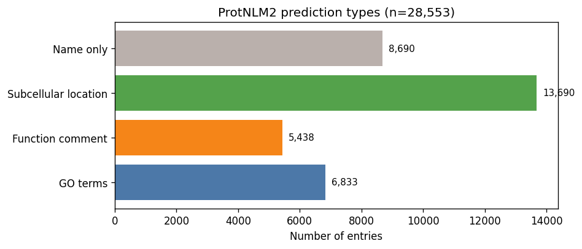
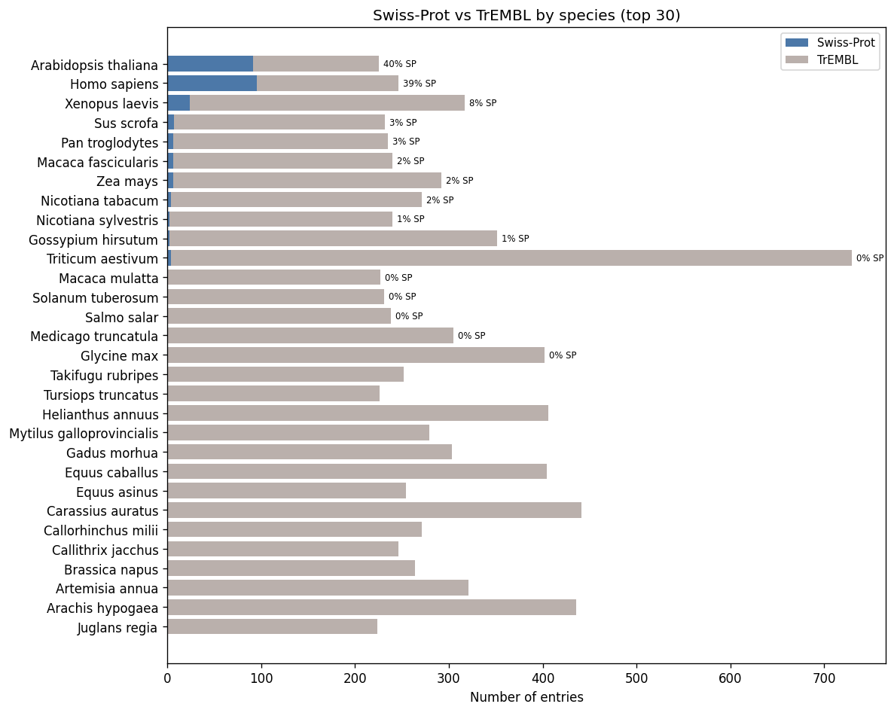
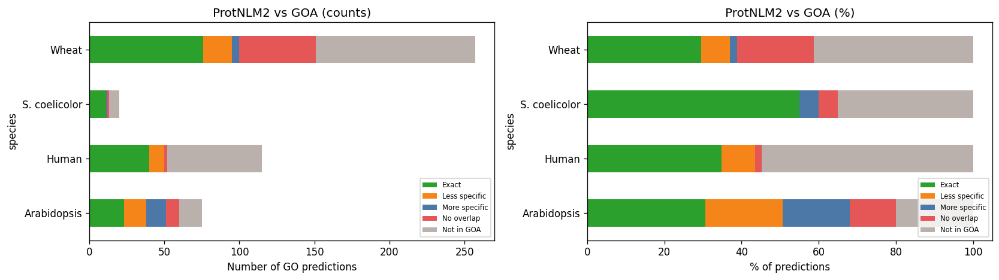
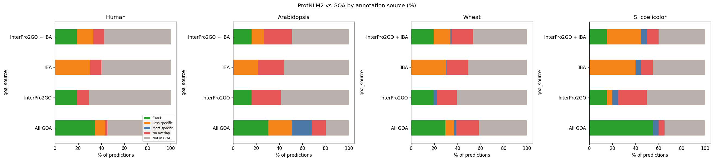

Evaluating ProtNLM2 Predictions Against Curated GO Annotations
Analysis of 28,553 proteins across 440 species (pre-release dataset)
Using ontology closure-based comparison against GOA
What is ProtNLM2?
Google's protein language model that predicts protein names, GO terms, subcellular locations, and function comments.

28,553 entries. Every protein gets a name; ~24% also get GO terms, ~48% get subcellular locations, ~19% get function comments. 30% get only a name.
ProtNLM2 architecture (UniProt docs)
T5 seq2seq model trained on 240M proteins (UniProt 2023_04, Swiss-Prot + TrEMBL). Inputs: amino acid sequence, organism TaxID, AlphaFold secondary structure. Ensemble of multiple models.
Post-processing: the Evidencer --- a corroboration pipeline (not part of the model):
1. Exclusion filter: GO taxon constraints, nomenclature violations, malformed IDs → rejected
2. String match (56%): predicted text matches existing annotations or cross-referenced DBs (InterPro, GO, EC)
3. phmmer (40%): sequence similarity to proteins with matching annotations (bit score > 25)
4. TM-align (4%): structural similarity via AlphaFold models (TM-score > 0.5)
Key insight: model_score is the LM's own confidence (threshold: 0.05), independent of evidence strength (r = −0.01 with phmmer score).
Dataset note: our XML (28,553 entries) is a pre-release; the public pilot has 26,856 (1,697 removed by quality filtering).
Dataset composition
Swiss-Prot fraction varies dramatically by species

Taxonomic composition and prediction richness
Land plants dominate by entry count. Prediction richness (% with GO terms) varies across groups.
Model scores and evidence methods
Right-skewed scores with spike near 1.0. String match is the dominant evidence type (56%), phmmer 40%, tmalign 4%.
Evaluation approach: closure-based comparison
Compare ProtNLM2 GO predictions against curated GOA using isa_partof_closure in DuckDB.
| Category | Definition |
|---|---|
| EXACT | Same GO term exists in GOA for this protein |
| LESS_SPECIFIC | Predicted term is a strict ancestor of a GOA term (redundant) |
| MORE_SPECIFIC | Predicted term is a strict descendant (potentially novel) |
| NO_OVERLAP | Different ontology branch --- novel or incorrect |
| NOT_IN_GCRP | Protein not in Gene Centric Reference Proteome --- cannot evaluate |
Seven species: Human, Mouse, Arabidopsis, Wheat, S. coelicolor, X. laevis, X. tropicalis
Cross-species comparison: ProtNLM2 vs all GOA

LESS_SPECIFIC dominates for all species. MORE_SPECIFIC and NO_OVERLAP are concentrated in plants (thinner GOA coverage).
ProtNLM2 vs automated pipelines (InterPro2GO, IBA)

Compared to InterPro2GO or IBA alone, more predictions appear as MORE_SPECIFIC or NO_OVERLAP. But are these genuine gains?
Systematic review: 6 patterns explain all "novel" predictions
Every MORE_SPECIFIC and NO_OVERLAP prediction falls into one of these:
| Pattern | ~Count | Genuinely novel? |
|---|---|---|
| Trivial deepening (zinc > metal, DNA > nucleic acid) | ~20 | No --- simple rules |
| Phmmer transfer (copy from top hit) | ~15 | Maybe --- depends on orthology |
| Cross-aspect gap (MF kinase vs BP phosphorylation) | ~15 | No --- evaluation artifact |
| Uninformative CC (cytoplasm, membrane) | ~5 | No |
| Cross-kingdom error (neuron terms on a plant) | 1 (6 preds) | No --- actively wrong |
| Multidomain false positive (LRR hit to LRRK2 kinase) | ~2 | No --- wrong domain |
Case study 1: Trivially correct (A0A3B6GK97, wheat)
ProtNLM2 predicts lipid catabolic process > GOA's lipid metabolic process
Protein has IBA: glycerophospholipase activity + monoacylglycerol lipase activity. Lipases are catabolic enzymes by definition.
Guilt-by-association in wheat GOA:
- 89 proteins with glycerophospholipase + lipid metabolic process
- 84 (94%) also have lipid catabolic process
- Simple rule: lipase activity -> add lipid catabolic process
ProtNLM2 is doing bookkeeping, not discovering biology.
Case study 2: Phmmer transfer (A0A3B6RKV1, wheat JmjC)
ProtNLM2 predicts 5 specific plant biology terms (gibberellin signaling, photomorphogenesis, seed germination, epigenetic regulation, red light response).
All 5 trace to one phmmer hit: Q67XX3 = Arabidopsis JMJ22 (score 689.2)
JMJ22 has all 5 terms with experimental evidence (IMP, IGI, IDA, IEP). ProtNLM2 simply copies the top hit's annotations.
This is ISS/ISO-style annotation transfer. The "added value" over IBA is that ProtNLM2 transfers BP annotations that PAINT's more conservative approach chose not to propagate.
Case study 3: False positive (F4JLB7, Arabidopsis RIC7)
ProtNLM2 predicts kinase activity + phosphorylation (score 0.23)
- phmmer hit: LRRK2 (mouse), score 33 --- barely above noise
- LRRK2 is a 2,527 aa multidomain protein: LRR + ROC + COR + kinase
- RIC7 (F4JLB7) only has LRR repeats --- a ROP GTPase effector, not a kinase
- ProtNLM2 also matched the wrong PANTHER family
Classic multi-domain problem: annotation leaks from one domain of a multidomain hit to a protein that only shares a different domain. Score is low (0.23) but prediction is still reported.
Case study 4: Cross-kingdom error (F6LAX4, wheat TOG)
phmmer hit: A0A7S3G569 (Palpitomonas bilix, a protist), score 420
ProtNLM2 predicts for a wheat protein:
- neuron projection --- plants do not have neurons
- neuronal cell body --- plants do not have neurons
- protein antigen binding --- adaptive immunity, not applicable to plants
TOG domains are conserved (tubulin binding), but the protist hit carries animal neuron annotations. No organism-awareness filter in the pipeline.
Case study 5: Ontology gaps (Q9KZ33, S. coelicolor)
IBA: sigma factor activity. ProtNLM2: transcription initiation.
Biologically tightly coupled but classified as NO_OVERLAP because:
- sigma factor activity -> regulation of transcription initiation (MF ancestry)
- transcription initiation -> DNA-templated transcription (BP ancestry)
- No is_a/part_of path between "regulation of X" and "X"
This is a real limitation of closure-based evaluation --- not a ProtNLM2 insight.
Summary of findings
-
Mostly recapitulates existing annotations --- EXACT + LESS_SPECIFIC dominate
-
MORE_SPECIFIC predictions are often trivially derivable from GBA, curatorial rules, or logical axioms
-
Phmmer transfer is the main mechanism --- same as ISS/ISO, just more aggressive than PAINT/IBA
-
Real errors exist: cross-kingdom transfer (neuron-in-wheat) and multidomain false positives (LRR-to-kinase)
-
NO_OVERLAP is inflated by cross-aspect ontology gaps and uninformative CC predictions
-
model_score provides some calibration (false positives tend to score low) but wrong predictions still get reported
Note: semantic similarity metrics (Resnik, Lin) as used in CAFA are not a good alternative --- they reward predictions that are ontologically close but biologically opposite (e.g. positive vs negative regulation).
Next steps
- Expand to more species (currently 4 of 440)
- Systematic GBA analysis: for all MORE_SPECIFIC predictions, compute co-annotation rate to distinguish trivially derivable from genuinely novel
- Consider broader relationship types (
enables,regulates) for cross-aspect evaluation - Compare against experimental evidence codes specifically (IDA, IMP, IGI)
- Cross-reference with AIGR expert reviews for the 8 overlapping proteins
Questions?
Notebook: projects/PROTNLM_EVALUATION/protnlm_summary.ipynb
Data: 28,553 entries parsed from ProtNLM2 XML export
Tools: DuckDB + GO ontology closures for hierarchical comparison